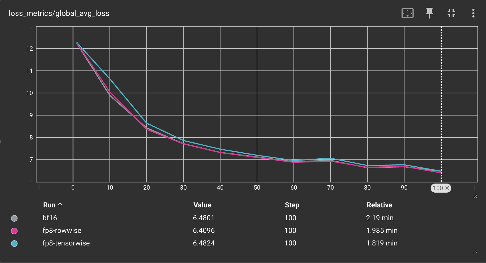

Pretraining with float8¶
Pretraining with float8 using torchao can provide up to 1.5x speedups on 512 GPU clusters, and up to 1.34-1.43x speedups on 2K H200 clusters with the latest torchao.float8 rowwise recipe.
In this tutorial, we will show 2 ways to use the torchao.float8 recipes for pretraining:
Pretraining with torchtitan, the offical PyTorch pretraining framework with native torchao integration.
Pretraining with torchao directly, to integrate torchao’s float8 training recipes into your own pretraining code.
Pretraining with torchtitan¶
In this tutorial we’ll pretrain Llama3 8b using torchtitan with torchao’s float8 training recipes: rowwise scaling and tensorwise scaling.
Torchtitan is PyTorch’s official pretraining framework that is natively integrated with torchao, and supports several popular flagship models with common forms of parallelism, float8 training, distributed checkpointing and more. See the torchtitan docs for additional details.
You can use this workflow to get started quickly with a “batteries included” experience. Users commonly fork torchtitan and build on top of it when they’re ready.
Prerequisites¶
(Recommended) Create a new virtual environment with conda or venv.
Install torchtitan, including the “downloading a tokenizer” step.
You’re now ready to start a pretraining job using one of the recipes below!
Rowwise scaling¶
Run the following command from torchtitan root directory to launch a Llama3 8b training job on 8 GPUs with float8 rowwise training:
NGPU=8 CONFIG_FILE="./torchtitan/models/llama3/train_configs/llama3_8b.toml" ./run_train.sh --training.compile --model.converters="float8" --float8.recipe_name="rowwise"
Torchtitan will automatically use FSDP2 to parallelize training when more than 1 GPU is used. To use other forms of parallelism, modify hyperparameters, or change other training configurations, you can directly edit the llama3_8b.toml file or use command line flags (run the command with --help to see more options).
You should see terminal output that looks like this:
[rank0]:[titan] 2025-06-04 08:51:48,074 - root - INFO - step: 1 loss: 12.2254 memory: 27.34GiB(28.78%) tps: 375 tflops: 21.73 mfu: 2.20%
[rank0]:[titan] 2025-06-04 08:51:58,557 - root - INFO - step: 10 loss: 10.7069 memory: 30.99GiB(32.62%) tps: 7,034 tflops: 407.35 mfu: 41.19%
[rank0]:[titan] 2025-06-04 08:52:10,224 - root - INFO - step: 20 loss: 8.9196 memory: 30.99GiB(32.62%) tps: 7,022 tflops: 406.65 mfu: 41.12%
[rank0]:[titan] 2025-06-04 08:52:21,904 - root - INFO - step: 30 loss: 8.1423 memory: 30.99GiB(32.62%) tps: 7,014 tflops: 406.23 mfu: 41.08%
As you can see, ignoring the warmup steps we are achieving around ~7k TPS with 30.99GB peak memory usage. To compare performance against bfloat16 training, you can remove the --model.converters="float8" --float8.recipe_name="rowwise" flags
and run the same command to see the baseline performance of bfloat16 training:
NGPU=8 CONFIG_FILE="./torchtitan/models/llama3/train_configs/llama3_8b.toml" ./run_train.sh --training.compile
You should see the following output:
[rank0]:[titan] 2025-06-04 11:02:37,404 - root - INFO - step: 1 loss: 12.2611 memory: 27.22GiB(28.65%) tps: 595 tflops: 34.47 mfu: 3.49%
[rank0]:[titan] 2025-06-04 11:02:49,027 - root - INFO - step: 10 loss: 10.4260 memory: 30.89GiB(32.51%) tps: 6,344 tflops: 367.39 mfu: 37.15%
[rank0]:[titan] 2025-06-04 11:03:01,988 - root - INFO - step: 20 loss: 8.9482 memory: 30.89GiB(32.51%) tps: 6,321 tflops: 366.06 mfu: 37.01%
[rank0]:[titan] 2025-06-04 11:03:14,991 - root - INFO - step: 30 loss: 8.1183 memory: 30.89GiB(32.51%) tps: 6,300 tflops: 364.89 mfu: 36.89%
[rank0]:[titan] 2025-06-04 11:03:28,013 - root - INFO - step: 40 loss: 7.4659 memory: 30.89GiB(32.51%) tps: 6,291 tflops: 364.36 mfu: 36.84%
[rank0]:[titan] 2025-06-04 11:03:39,769 - root - INFO - [GC] Peforming periodical GC collection. 0.02 seconds.
As you can see, the bfloat16 baseline achieves ~6.3k TPS using 30.89GB peak memory.
This means our float8 rowwise scaling recipe achieves 1.11x higher throughput compared to bfloat16 baseline, using nearly identical peak memory!
Note that you can achieve even higher throughput improvement using the tensorwise scaling recipe, which exists at a different point on the performane vs accuracy curve.
Tensorwise scaling¶
Float8 training with tensorwise scaling is the default recipe, so we can omit the --float8.recipe_name flag:
NGPU=8 CONFIG_FILE="./torchtitan/models/llama3/train_configs/llama3_8b.toml" ./run_train.sh --training.compile --model.converters="float8"
You should see the output like the following:
[rank0]:[titan] 2025-06-04 10:52:19,648 - root - INFO - step: 1 loss: 12.2648 memory: 27.28GiB(28.71%) tps: 557 tflops: 32.29 mfu: 3.26%
[rank0]:[titan] 2025-06-04 10:52:29,475 - root - INFO - step: 10 loss: 10.9106 memory: 30.91GiB(32.53%) tps: 7,503 tflops: 434.53 mfu: 43.94%
[rank0]:[titan] 2025-06-04 10:52:40,166 - root - INFO - step: 20 loss: 9.0774 memory: 30.91GiB(32.53%) tps: 7,663 tflops: 443.78 mfu: 44.87%
[rank0]:[titan] 2025-06-04 10:52:50,885 - root - INFO - step: 30 loss: 8.3233 memory: 30.91GiB(32.53%) tps: 7,643 tflops: 442.66 mfu: 44.76%
[rank0]:[titan] 2025-06-04 10:53:01,613 - root - INFO - step: 40 loss: 7.6150 memory: 30.91GiB(32.53%) tps: 7,637 tflops: 442.27 mfu: 44.72%
As you can see, we are achieving ~7.6k TPS using 30.91GB peak memory, which is 1.21x higher throughput compared to the bfloat16 baseline!
Picking a recipe¶
TL;DR: rowwise scaling is better for jobs prioritizing more accurate numerics and training stability, and tensorwise is better for jobs prioritizing training throughput.
The higher throughput of tensorwise scaling comes at the cost of slightly higher quantization error (i.e., reduced numerical integrity vs bfloat16) compared to rowwise scaling. This is because rowwise scaling using a more granular scaling factor (per row, instead of per tensor), which limits the impact of outliers that can cause underflow during scaling.
Below you can see the loss curves comparing bfloat16, float8 tensorwise, and float8 rowwise training for training Llama3 8b on 8xH100 GPUs:
Important notes¶
float8 training is currently only supported on 2+ GPUs in torchtitan, not single GPU training.
You must use
--training.compileto achieve high performance. torchao float8 training recipes are built natively on top oftorch.compile, so it will work out of the box!
Pretraining with torchao directly¶
In this tutorial we’ll pretrain a toy model using torchao APIs directly.
You can use this workflow to integrate torchao into your own custom pretraining code directly.
Prerequisites¶
(Recommended) Create a new virtual environment with conda or venv.
You’re now ready to integrate torchao into your training code directly!
Model conversion API¶
The torchao API for converting your model to use float8 training is: convert_to_float8_training. This API will recursively convert nn.Linear modules in your model to use Float8Linear.
You can use the module_filter_fn argument to determine which nn.Linear layers should be swapped to use Float8Linear.
You should refer to this performance benchmark table to understand what kind of performance improvement over bfloat16 you can expect for a given GEMM size.
Below is a code snippet showing how to use it:
import torch
from torch import nn
import torch.nn.functional as F
from torchao.float8.float8_linear_utils import convert_to_float8_training
from torchao.float8.float8_linear import Float8Linear
from torchao.float8 import convert_to_float8_training
from torchao.utils import TORCH_VERSION_AT_LEAST_2_5
if not TORCH_VERSION_AT_LEAST_2_5:
raise AssertionError("torchao.float8 requires PyTorch version 2.5 or greater")
# create model and sample input
m = nn.Sequential(
nn.Linear(2048, 4096),
nn.Linear(4096, 128),
nn.Linear(128, 1),
).bfloat16().cuda()
x = torch.randn(4096, 2048, device="cuda", dtype=torch.bfloat16)
optimizer = torch.optim.AdamW(m.parameters(), lr=1e-3)
# optional: filter modules from being eligible for float8 conversion
def module_filter_fn(mod: torch.nn.Module, fqn: str):
# don't convert the last module
if fqn == "1":
return False
# don't convert linear modules with weight dimensions not divisible by 16
if isinstance(mod, torch.nn.Linear):
if mod.in_features % 16 != 0 or mod.out_features % 16 != 0:
return False
return True
# convert specified `torch.nn.Linear` modules to `Float8Linear`
convert_to_float8_training(m, module_filter_fn=module_filter_fn)
# enable torch.compile for competitive performance
m = torch.compile(m)
# toy training loop
for _ in range(10):
optimizer.zero_grad()
output = m(x)
# use fake labels for demonstration purposes
fake_labels = torch.ones_like(output)
loss = F.mse_loss(output, fake_labels)
loss.backward()
optimizer.step()
# save the model
torch.save({
'model': m,
'model_state_dict': m.state_dict(),
'optimizer_state_dict': optimizer.state_dict(),
}, 'checkpoint.pth')